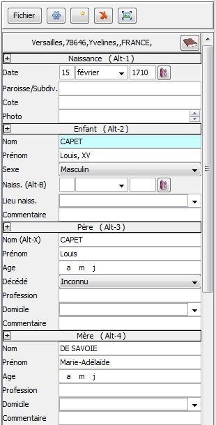

Editeur de relevés
Toutes commandes de l'éditeur sont accessibles avec la souris ou avec des touches "raccourci" du clavier.
L'utilisation des touches de raccourci est facultative.
Cependant elle permet une saisie en masse plus rapide en évitant d'avoir à utiliser alternativement la souris et le clavier.
|  | Création d'un relevéPour créer un nouveau relevé, sélectionner l'onglet du type de relevé souhaité et cliquer sur le bouton 
ou utiliser une touche raccourci :
ALT-N pour créer un relevé de naissance.
ALT-M pour créer un relevé de mariage.
ALT-D pour créer un relevé de décès.
ALT-V pour créer un relevé divers.
Suppression d'un relevéPour supprimer un relevé, sélectionner le relevé dans la table et cliquer sur le bouton  ou utiliser la touche ALT-S ou utiliser la touche ALT-S
|
Les touches de déplacement
TAB (tabulation) pour passer au champ suivant.
SHIFT-TAB pour passer au champ précédent.
Remarque : La zone en cours d'édition apparaît en surbrillance (fond bleu).
Déplacements rapides:
ALT-1 Date de l'événement
ALT-2 Individu ou intervenant N°1
ALT-3 Père
ALT-4 Mère
ALT-5 Epouse ou intervenant N°2
ALT-6 Père
ALT-7 Mère
ALT-8 Témoins
ALT-9 Commentaire général
Les touches d'aide à la saisie
Annulation
ESC (Escape)
: Annule la saisie d'un champ tant que le champ est en cours de saisie
et retrouver la valeur d'origine tant que la zone est en cours de
saisie.
ALT-Z : Annule les modifications faites précédemment après avoir quitté le champ.
Attention : la touche CTRL-Z habituellement utilisée pour cela ne fonctionne pas ici . La recherche de solution est en cours.
espace : Taper un espace
en fin de champ pour refuser les autres termes proposés par la fonction
de complétion. Cet espace est ensuite supprimé automatiquement.
Aide à la saisie
ALT-X : copie le nom de l'individu dans le champ du nom du père de l'individu.
ALT-Y : copie le nom de l'épouse dans la champ du nom du père de l'épouse, puis
ALT-B : copie la date de l'évènement du relevé dans la champ de la date de naissance de l'individu.
ALT-=
: copie le valeur de même champ de l'enregistrement précédemment saisi.
Ce raccourci est particulièrement utile quand les témoins sont les mêmes d'un acte à l'autre.
Le deuxième éditeur
Pour ouvrir le deuxième éditeur, cliquer sur le bouton  présent en tête du premier éditeur.
présent en tête du premier éditeur.
Cet
deuxième éditeur peut être placé à coté des photos des actes pour faire
la saisie en masse. Dans ce cas, le premier éditeur est plutôt utilisé
pour consulter ou corriger des relevés déjà saisis.
Fonctions contrôle et de mise en forme automatiques
Date de l'évènement et nom (ou prénom) absent.
Il n'est pas possible d'enregistrer un relevé si la date et le nom (ou
prénom) sont vides.
Si
ces deux valeurs ne sont pas renseignées un message d'erreur est
affiché et empêche de passer à un autre relevé tant que le problème
n'est pas réglé. Il faut soit compléter la donnée manquante soit
supprimer le relevé.
Alerte sur doublon
Si
un relevé avec la même date, même nom et même prénom existe déjà, un
message d'alerte est affiché pour signaler un doublon possible.
Cette fonction peut être désactivée dans le panneau de configuration.
Casse du nom
Le nom est
converti en majuscule au fur et à mesure de la saisie.
Casse du prénom
Les première lettres de chaque prénom sont mises en majuscule au fur et à mesure de la saisie.
Casse de la profession
Le première lettre de la profession est mise en majuscule au fur et à mesure de la saisie.
Suppression des espaces superflus.
Les espaces en début et en fin de champ sont systématiquement supprimés quand la saisie d'un champ est terminée.
Copie automatique du numéro de photo
Quand
un nouveau relevé est créé , le numéro de photo est renseigné
automatiquement par copie du numéro de photo du relevé précédemment
créé.
Le numéro de photo peut être facilement incrémenté en cliquant
sur les boutons qui apparaissent à droite du champ, ou en utilisant
les touches de direction HAUT et BAS
Cette fonction peut être désactivée dans le panneau de configuration.